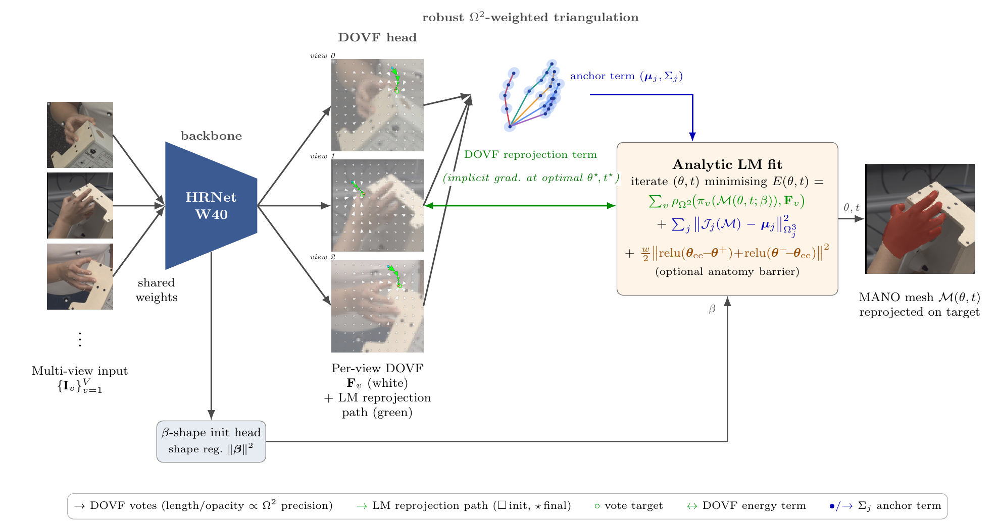
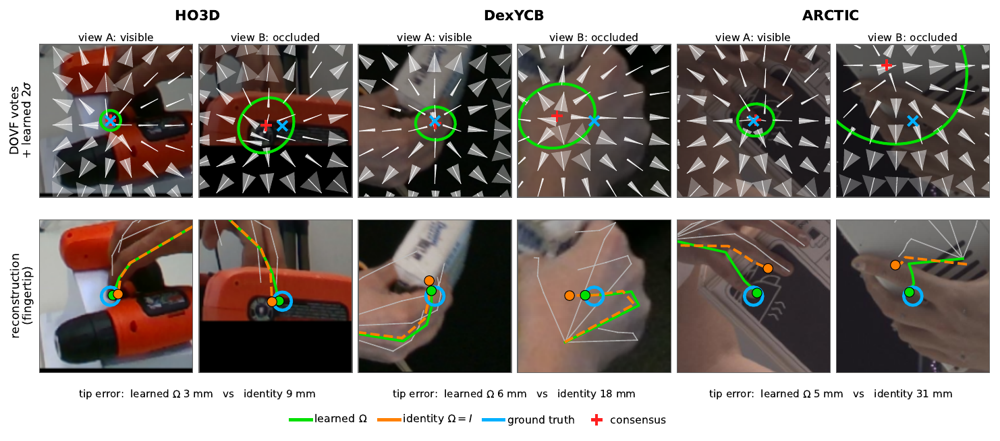
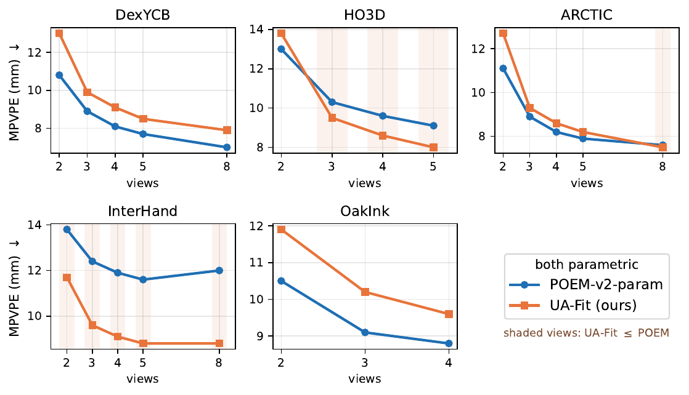
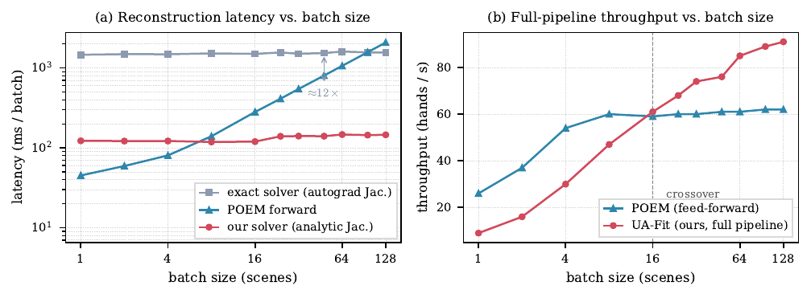

In multi-view hand capture, the most accurate estimators regress free mesh vertices. Methods that regress MANO parameters are usually less accurate, since rotations are hard to regress and errors amplify along the kinematic chain, while fitting is accurate but slow. We show that when the cameras and MANO kinematics are known, the lift to 3D needs no learned parameters, as only the 2D evidence is uncertain.
Our method UA-Fit (Uncertainty-weighted Analytical Fit) learns only per-view 2D evidence: a dense vector field where each patch of pixels votes for each joint, with an anisotropic precision per vote. A parameter-free solver recovers MANO pose and translation: it triangulates the votes into precision-weighted 3D joints, then fits MANO with a batched Levenberg–Marquardt solver whose analytic kinematic Jacobian is ≈14× cheaper than automatic differentiation. The hand shape is predicted by a compact feed-forward head. The solver has no learned weights, yet we train the 2D fields end to end through its converged solution at constant memory.
The output is MANO-consistent by construction, and the learned reconstruction stage is only 2.0M parameters, 20× smaller than the learned fusion head of POEM-v2's parametric variant. On the full evaluation splits of five benchmarks under one protocol, UA-Fit averages 6% lower per-vertex and 11% lower per-joint error than this baseline: markedly more accurate on the shape-diverse InterHand2.6M and HO3D, on par on ARCTIC, and less accurate on DexYCB and OakInk, where the 2D evidence, not the solver, is the limit. Zero-shot results on GigaHands and an internal dataset support generalization.
Parametric hand estimators are compact and produce a clean, riggable MANO mesh, but regressing joint rotations is hard and small errors compound down the kinematic chain. Free-vertex methods are more accurate but discard the model. UA-Fit keeps the model and moves all the learning to where the actual uncertainty lives: the 2D image evidence.
The network predicts, per view, a dense oriented vote field: every patch of pixels votes for every joint and reports how trustworthy that vote is, as an anisotropic 2×2 precision. A parameter-free analytical solver then does the geometry: it triangulates the precision-weighted votes into 3D joints and fits MANO with a batched Levenberg–Marquardt loop. Because the kinematic Jacobian is written in closed form, each solve is about 14× cheaper than differentiating the model automatically, and the whole solver is differentiable end to end at constant memory, so the 2D fields are trained through the fit. The result is a MANO-consistent hand from a reconstruction stage of just 2.0M parameters.

The analytical Levenberg–Marquardt solver converging: the fitted MANO hand alongside the energy and error decreasing over the solver iterations.
Multi-view hand mesh recovery on public benchmarks, from the submitted supplementary video. Use the arrows or dots to switch between datasets.


UA-Fit applied zero-shot, with no fine-tuning, to GigaHands, a capture set unseen during training.
@inproceedings{zakour2026uafit,
title = {Learn 2D, Solve 3D: UA-Fit, an Uncertainty-Weighted Analytical
Solver for Multi-view Hand Mesh Recovery},
author = {Zakour, Marsil and Patsch, Constantin and Piccolrovazzi, Martin
and Wu, Yuankai and Steinbach, Eckehard},
booktitle = {European Conference on Computer Vision (ECCV) Workshops --- HANDS},
year = {2026}
}